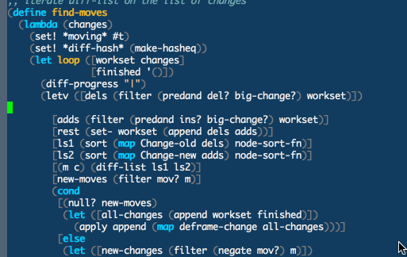
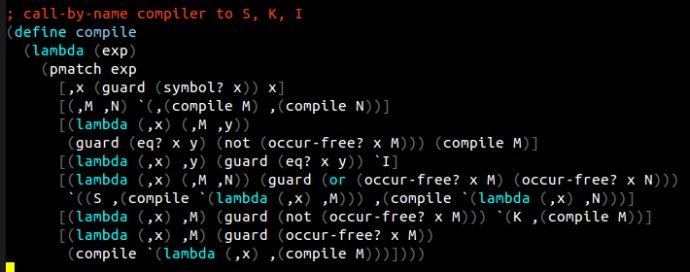

Scheme 编程环境的设置
（王垠 yinwang.org 版权所有，未经许可，请勿转载）

介绍了这么久的 Scheme，却没有讲过如何配置一个高效的 Scheme 的编程环境。有些人开始学习 Scheme 的时候感觉无从下手，所以今天讲一下它的配置。
Scheme 的配置有很多种方式，我不想介绍太多东西，免得有人看花了眼，所以这里只介绍一下我自己的配置。我不大喜欢像 Quack 一类的复杂的环境，因为它们经常有很多多余的功能，却缺少我想要的功能。一旦我想修改它们，又到处出问题。我的配置很简约，我用它写了几千行的超高难度的代码，翻来覆去的改，感觉效率非常高，也没有觉得缺少什么特别重要的东西。
现在我就一步一步的介绍我的配置。
安装 Scheme
世界上最好的 Scheme 实现是 Chez Scheme，但是它不免费也不开源。所以如果你不想破费，那就只好下载一个它的“免费版”，叫做 Petite Chez Scheme（petite 是法语里“小”的意思）。它可以在这里下载：
这个页面挺长，上面都是正式版的 Chez Scheme，一点击就会叫你“联系销售人员”。要滚动到下面才能看见免费的版本。怎么安装我就不讲了，自己看说明应该很容易的。
Petite 是一个完善的，高效的实现，你可以把它当成解释器使用。这个解释器的速度非常之快，甚至比很多别的 Scheme 实现编译后的代码还要快。但是它有一个问题，就是它给出的出错信息太简约了，以至于连出错的函数名字都不告诉你。这样写大一点的程序就会比较痛苦了（虽然我还是用它写了2000多行的编译器代码）。
所以如果你想写稍微大点的东西，可以用 Racket。它可以在这里下载：
安装应该很容易。Ubuntu 也自带了 Racket，所以可以直接让系统安装它。
设置 ParEdit mode
我编辑 Scheme 的时候都用 Emacs。我使用一个叫做 ParEdit mode 的插件。它可以让你“半结构化”式的编辑 Scheme 和其它的 Lisp 文件。开头你可能会有点不习惯，可是一旦习惯了，你就再也离不开它。
ParEdit mode 可以在这里下载：
http://mumble.net/~campbell/emacs/paredit.el
下载之后，把它放到一个目录里，比如 ~/.emacs.d，然后打开 ~/.emacs 配置文件，加入如下设置：
(autoload 'paredit-mode "paredit"
"Minor mode for pseudo-structurally editing Lisp code."
t)
这样，只要你使用 M-x paredit-mode 就可以自动载入这个模式。具体的操作方式可以看它的说明（按 C-h m 查看“模式帮助”），我下面也会简单说一下。
设置 scheme mode
我一般就用系统自带的 Scheme 模式，叫 cmuscheme。但是为了方便，我自己写了几个函数，用于在执行 Scheme 代码的时候自动启动解释器，并且打开解释器窗口。你基本只需要把下面的代码拷贝到你的 .emacs 文件里就行：
;;;;;;;;;;;;
;; Scheme
;;;;;;;;;;;;
(require 'cmuscheme)
(setq scheme-program-name "racket") ;; 如果用 Petite 就改成 "petite"
;; bypass the interactive question and start the default interpreter
(defun scheme-proc ()
"Return the current Scheme process, starting one if necessary."
(unless (and scheme-buffer
(get-buffer scheme-buffer)
(comint-check-proc scheme-buffer))
(save-window-excursion
(run-scheme scheme-program-name)))
(or (scheme-get-process)
(error "No current process. See variable `scheme-buffer'")))
(defun scheme-split-window ()
(cond
((= 1 (count-windows))
(delete-other-windows)
(split-window-vertically (floor (* 0.68 (window-height))))
(other-window 1)
(switch-to-buffer "*scheme*")
(other-window 1))
((not (find "*scheme*"
(mapcar (lambda (w) (buffer-name (window-buffer w)))
(window-list))
:test 'equal))
(other-window 1)
(switch-to-buffer "*scheme*")
(other-window -1))))
(defun scheme-send-last-sexp-split-window ()
(interactive)
(scheme-split-window)
(scheme-send-last-sexp))
(defun scheme-send-definition-split-window ()
(interactive)
(scheme-split-window)
(scheme-send-definition))
(add-hook 'scheme-mode-hook
(lambda ()
(paredit-mode 1)
(define-key scheme-mode-map (kbd "<f5>") 'scheme-send-last-sexp-split-window)
(define-key scheme-mode-map (kbd "<f6>") 'scheme-send-definition-split-window)))
我的配置会在加载 Scheme 文件的时候自动载入 ParEdit mode，并且把 F5 键绑定到“执行前面的S表达式”。这样设置的目的是，我只要把光标移动到一个S表达式之后，然后用一根手指头按 F5，就可以执行程序。够懒吧。
ParEdit mode 的简单使用方法
ParEdit mode 是一个很特殊的模式。它起作用的时候，你不能直接修改括号。这样所有的括号都保持完整的匹配，不可能出现语法错误。但是这样有一个问题，如果你要把一块代码放进另一块代码，或者从里面拿出来，就不是很方便了。
为此，ParEdit mode 提供了几个非常高效的编辑方式。我平时只使用两个：
C-right: 也就是按住 Ctrl 再按右箭头。它的作用是让光标右边的括号，“吞掉”下一个S表达式。比如，
(a b c) (d e)。你把光标放在(a b c)里面，然后按C-right。结果就是(a b c (d e))。也就是把(d e)被整个“吞进”了(a b c)里面。M-r: 去掉外层代码。这在你需要去掉外层的 let 等结构的时候非常有用。比如，如果你的代码看起来是这样：
(let ([x 10]) (* x 2))当你把光标放在
(* x 2)的最左边，然后按M-r，结果就变成了(* x 2)也就是把外面的
(let ([x 10]) ...)给“掀掉”了。其它的一些按键虽然也有用，不过我觉得这两个是最有用的，甚至不可缺少的。有些其他的自动匹配括号的模式，没有提供这种按键，所以用起来很别扭。
设置括号颜色
很多人看见 Lisp 就怕了，就是因为它看起来括号太多。可是这样的语法，却是有很大的好处的（参考这篇博文《谈语法》）。如果你真的觉得括号碍眼，你可以稍微调整一下括号的颜色，比如淡灰色。这样括号看起来就没有那么显眼了。
你只需要下载这个 el，放到你的 .emacs.d:
https://www.dropbox.com/s/v0ejctd1agrt95x/parenface.el
然后在 .emacs 里面加入两行：
(require 'parenface)
(set-face-foreground 'paren-face "DimGray")
然后再打开 Scheme 代码的时候，你就会看到是这个样子：

好了，这就是我写 Scheme 的所有配置了。希望这些有所帮助。